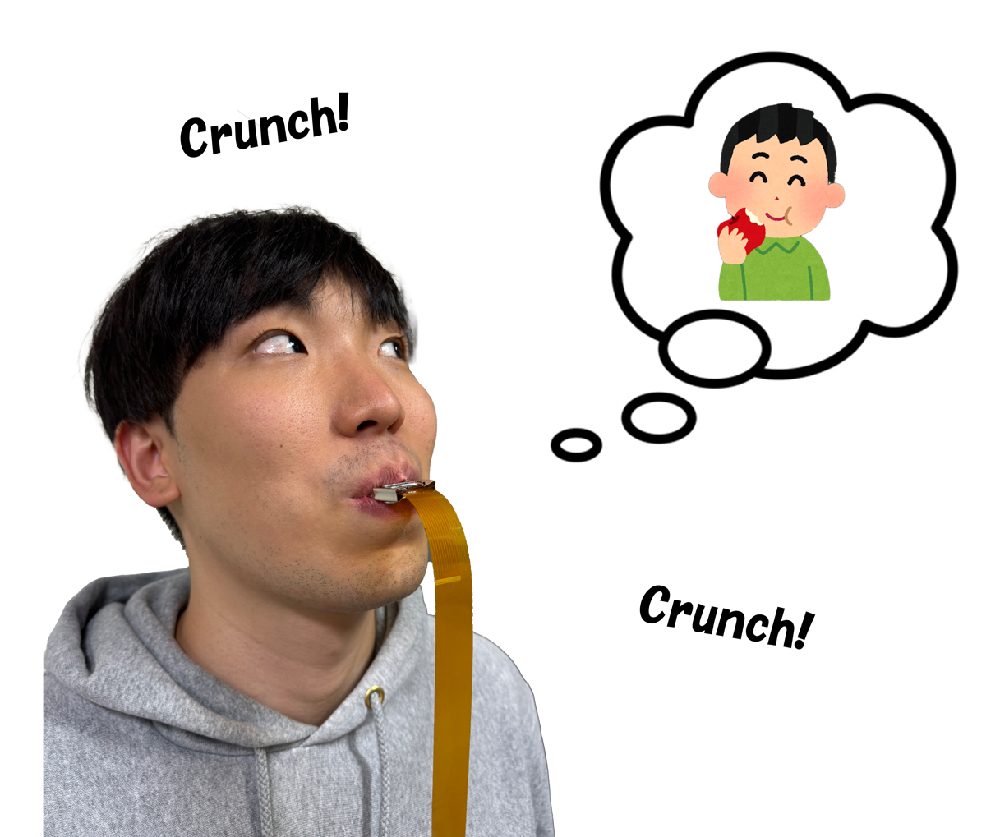

Research · Haptics · Perception
Intraoral Electrotactile Stimulation
Exploring how electrical stimulation inside the mouth can contribute to texture-related perception during chewing.
Nojima Laboratory, University of Electro-Communications
Undergraduate research, Apr 2023 – Mar 2024 · Graduate research, Apr 2024 – Mar 2026
Advisor: Takuya Nojima

Research question
Food texture perception involves sensory information from several tissues involved in mastication. My research explores intraoral electrotactile stimulation as a way to investigate these sensations and their potential use in haptic interfaces.
Approach and development
The early work investigated transcutaneous electrical stimulation targeting periodontal ligament receptors and the oral sensations it produced. I used Fusion 360 and 3D printing to develop electrode placement, with Arduino and Processing supporting the stimulation prototypes and experiments.
The IEEE VR 2026 poster characterized gingival electrical stimulation across stimulation frequencies and electrode locations. It examined the qualities and spatial distributions of the resulting sensations as a preliminary step toward intraoral texture display.
The subsequent manuscript explores chewing-synchronized intraoral electrotactile stimulation for modulating texture-related perception during mastication.
My contribution
- Developed the research direction around intraoral stimulation and food texture perception.
- Designed and prototyped electrode placement and stimulation interfaces.
- Led the design and execution of experiments in the early periodontal stimulation study.
- Presented the work at domestic conferences in 2023 and as a poster at IEEE VR 2026.
Publications and presentations
IEEE VR 2026 poster
Characterizing Gingival Electrical Stimulation Toward Intraoral Texture Display
Woosang Kim, Sho Sakurai, Koichi Hirota, and Takuya Nojima.
IEEE VR 2026 · Poster
Submitted manuscript
An Exploratory Study of Chewing-Synchronized Intraoral Electrotactile Stimulation for Modulating Texture-Related Perception During Mastication
Woosang Kim, Sho Sakurai, Koichi Hirota, and Takuya Nojima.
Submitted to IEEE Transactions on Haptics, 2026.
Earlier presentations
The 2023 VRSJ and SIG Haptics presentations document the earlier phase of this research. See the complete publication and presentation list.
Research resources
Laboratory overview of the early periodontal stimulation study